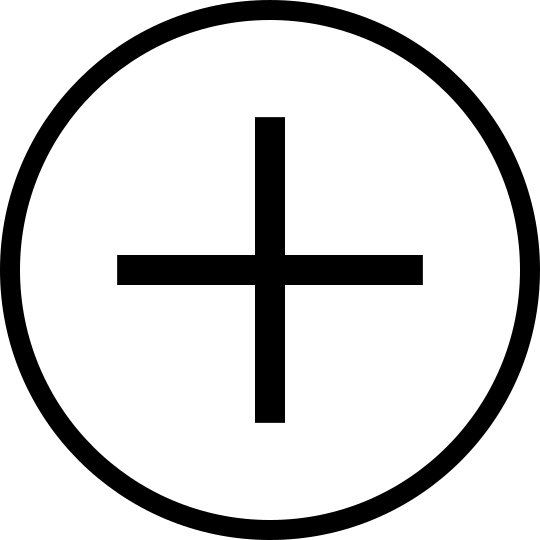
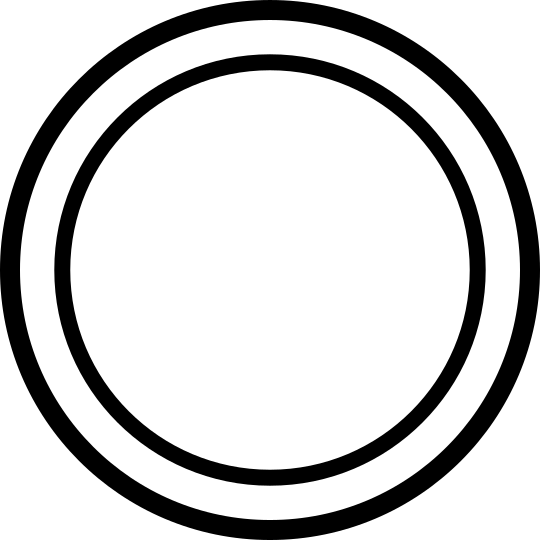

The Toolbar
New state tool - select this and click on an empty part of the canvas to create new nodes.
Link tool - select this and click and drag from one state to another to link those states together. Simply click a state to create a link from that state to itself.
Text tool - select this and click on a state to rename it. Clicking on a link allows you to change the transition condition of that link, separating different conditions with a comma eg. 'a,b,c'.
Accepting tool - select this and click on a state to toggle whether it is an accepting state or not. Accepting states are shown by them having an extra circle inside them.
Delete tool - select this and click on a state or a link to remove it.